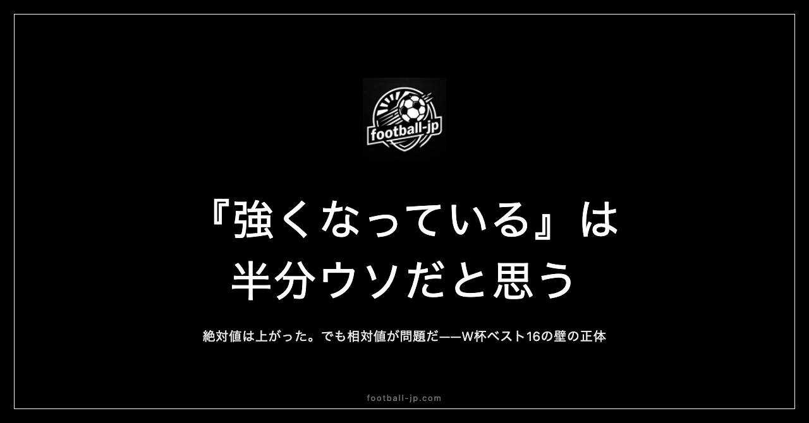

『日本代表は確実に強くなっている』は半分ウソだと思っている
「日本代表は確実に強くなっている」——この言葉を聞くたびに、少し引っかかりを感じます。嘘ではないけれど、全部本当でもない。今回はその「半分ウソ」の中身を書いてみます。

「強くなっている」の何が本当か
まず、本当の部分から書きます。
欧州主要リーグで活躍する選手の数は、確実に増えています。プレミアリーグ、ラ・リーガ、ブンデスリーガ——10年前には考えられなかった舞台で、日本人選手が主力として試合に出ています。football-jpで管理している68名の海外組は、2010年代初頭の倍以上の規模です。
カタールW杯でドイツとスペインに勝ったことも事実。あの結果は偶然ではなく、選手の質の向上が背景にあったと思っています。
この部分は、「強くなっている」と言って間違いありません。
数字で見るとわかりやすいです。2010年南アフリカW杯の日本代表メンバーで、欧州主要リーグ（プレミア、リーガ、ブンデス、セリエA、リーグ1）に所属していた選手は数名でした。それが2022年カタールW杯では、スタメン組のほとんどが欧州主要リーグ所属になっていた。この変化は、「選手の質が上がっている」という事実として認めていいと思います。
「半分ウソ」の正体
では、どこが半分ウソなのか。
「強くなっている」という言葉は、単線的な成長を想定しています。昨日より今日が強い。今日より明日が強い。右肩上がりの成長曲線。でも実際はそうではない。
問題は「相手も強くなっている」という点です。
欧州のサッカーレベルは、日本より速いペースで上がっています。分析ツール、フィジカルトレーニング、戦術の高度化——これはどのチームも同時に進化している。日本が「絶対値として強くなっている」としても、「相対値として強くなっているか」は別の話です。
W杯でベスト16を超えられていない理由のひとつは、そこにある気がします。
「絶対値」と「相対値」の違いを、もう少し具体的に考えてみます。日本代表が10年前より強い、という事実は恐らく本当です。でも強豪国はその間に何もしていなかったわけではない。ドイツ、フランス、スペインは、育成システムを改良し、代表監督を代え、新しい戦術を取り入れ続けていた。
「強くなっている」という評価は、「以前の日本代表と比べて」という文脈でしか成立しない。「世界のトップとの差が縮まっているか」という問いに同じ言葉で答えることはできません。
「確実に」という言葉の危うさ
「確実に強くなっている」の「確実に」も、少し気になります。
サッカーの強さは、測定が難しいです。同じ日本代表でも、メンバー構成、対戦相手、コンディション、試合の場所によって、結果も内容もまったく変わります。W杯予選でアジアの相手に苦しんでいる試合と、ドイツに勝った試合が「同じチーム」のことだとは思えない瞬間がある。
「確実に」という言葉は、不確実なものに確実さの衣をかぶせる表現です。成長を肯定的に語りたいときに使われやすい言葉でもある。でも、不確実さを認めた上で「それでも成長の傾向はある」と言う方が、正直だと思っています。
「こう言う人がいるかもしれない」という反論をひとつ先回りしておきます。「そんな細かいことを言っても、勝てるか勝てないかが全てじゃないか」という意見です。
それはその通りです。最終的にはW杯での結果が全てです。でも、「確実に強くなっている」という言葉への過信が、代表の課題を直視することを妨げることがある。チームが相対的に強くなっていない部分に目を向けないまま「確実に」と言い続けると、本当の意味での改善につながらない。
現実を正確に見ることが、長期的には日本サッカーの助けになると思っています。
W杯予選での「苦しみ方」の話
W杯予選での試合内容を見ると、「確実に強くなっている」とは言いにくい場面があります。
アジアの中位〜下位の相手に対して、思ったほど内容が良くない試合があります。引いた相手をどう崩すか。フィジカルコンタクトが激しくなったときにどう戦うか。欧州のサッカーとは異なる問題に、代表は毎回少し苦労している。
これは「弱い」という話ではなく、「アジアのサッカーの質も上がっている」という話でもあります。W杯予選で苦しんでいること自体が、日本だけの問題ではない。アジア全体のレベルが上がっているから、以前より予選が難しくなっている面もある。
ただ、「苦しんでいる理由」を正確に把握しないと、「確実に強くなっている」という楽観的な評価だけが先行してしまいます。強くなっている部分と、まだ課題がある部分を、分けて見る必要があります。
「チームの強さ」と「選手の強さ」は別の話
もうひとつの「半分ウソ」の側面として、「個人の強さ」と「チームの強さ」を混同していることがあります。
三笘薫はプレミアリーグで世界トップクラスのウィングとして活躍しています。久保建英もラ・リーガで安定して出場し、クリエイティブなプレーを見せている。このふたりを例に取れば、「日本人選手は強くなった」という事実は揺るがない。
でも代表に来たとき、ふたりの「連携」はどうか。クラブでの輝きが、異なるスタイルの選手が集まる代表チームでも再現されるかは別の問いです。
ブライトンでの三笘薫は、チームの戦術の中でその役割が最大化されています。代表では、ブライトンと同じ仕組みで動けるわけではない。「選手が強い」と「チームとして強い」は、イコールではないのに、「確実に強くなっている」という言葉はこのふたつを同じものとして語ることが多い。
これが、僕が「半分ウソ」だと感じる理由のもうひとつです。
「半分ウソ」で終わらせない
ここまで「半分ウソ」と書いてきましたが、「弱い」と言いたいわけではありません。
日本代表は、強くなっています。その事実は認めています。問題は「確実に」「強くなっている」という言葉が、現実をシンプルに整えすぎている点です。
成長はある。でも自動的ではない。欧州組の活躍があっても、チームとしての連携はまだ課題がある。W杯本番での結果が伴うかどうかは、蓋を開けてみないとわからない。
そういう複雑さを含めて語れるようになったとき、初めて「本当に強くなっている」と言えるんじゃないかと思っています。
football-jpで毎日データを見ていると、「強くなっている部分」と「変わっていない部分」が両方見えます。欧州で試合に出ている選手の数は増えている。でも代表に召集されたときに、そのクラブでの実力が代表でも同じように出るかというと、必ずしもそうではない。
代表を「確実に強くなっている」とだけ評価するよりも、「どの部分が強くなっていて、どの部分に課題があるか」を具体的に追い続けることの方が、W杯本番に向けた正確な見方だと思っています。
W杯2026が近づいている今、「確実に強くなっている」という楽観と、「相対的にどう評価するか」という問いを、両方持ちながら見続けていきたいと思っています。どちらかだけでは、本番に向けた準備にならない。
「半分ウソ」と向き合うことが、W杯の楽しみ方を変える
「確実に強くなっている」という言葉を使わずに、日本代表を語るとしたらどうなるか。
「選手個人の質は確実に上がっている。欧州主要リーグで主力を張る選手の数は増えた。でもチームとしての成熟度は発展途上で、W杯本番でどこまでいけるかは未知数だ」
これが、現状の正確な評価に近いと思っています。
このような「複雑な評価」を持ちながら代表を応援することは、「確実に強くなっている」と信じながら応援するより、少し疲れるかもしれません。期待と現実のギャップを毎回受け入れる必要があるからです。
でも、そのギャップがあるからこそ、W杯本番でいい結果が出たとき——たとえば強豪国に勝ったとき——の喜びが本物になります。「確実に強くなっている」と思っていたら、勝ったことが「当然」になる。「半分ウソだと思っていた」からこそ、勝ちが「本物の驚きと喜び」になる。
「半分ウソ」を意識して見続けることが、W杯本番の喜びを最大化するための準備なのかもしれません。
データで見ると「半分ウソ」の構造がより見えてくる
football-jpで日々68名の海外組データを更新していると、「確実に強くなっている」という言葉のあいまいさがより感じられます。
特定の選手の出場時間が増えているリーグがある一方で、別のリーグでは出場機会が安定していない選手もいる。欧州で主力として試合に出ている選手の数は増えていても、「試合に出ている」と「圧倒的な成果を出している」は異なります。
数字は正直です。「欧州在籍選手が増えた」という事実と、「その選手たちが代表で機能しているか」という問いは、別の問いです。毎日データを見ていると、この「数字が示すことと示さないこと」の境界線が見えてきます。
「日本代表は確実に強くなっている」という言葉は、データで見ると「確実に」という部分が特に難しい。データは常に流動的で、「確実」という言葉が成立する状態は、試合をまたぐたびに変化しています。
それでも、選手のクオリティが10年前とは違うレベルに達していることは、データからも見える事実です。「半分ウソ」の残り半分——「本当に強くなっている部分」——は、数字の中に確かに存在しています。
複雑に見ることと、応援することは矛盾しない
この記事を通じて言いたかったことをひとつにまとめるとしたら——「複雑に見ること」と「応援すること」は矛盾しない、ということです。
「日本代表が好きだから、強くなっていると信じたい」という気持ちはわかります。でも「強くなっている」という言葉をそのまま使うことで、課題が見えにくくなる。
好きだからこそ、正確に見たい。良い部分を素直に認めながら、課題がある部分も認める。それが代表を長く応援し続けることとつながっている気がします。
W杯2026が近づくほど、「確実に強くなっている」という楽観論と、「油断できない」という慎重論が交互に出てきます。どちらも一面の真実を含んでいます。その両方を同時に持ちながら応援することが、W杯本番での喜びも悔しさも深く味わえる見方だと思っています。
「半分ウソ」を知っているから、残り半分の「本当」が輝く。そういう見方で、これからも代表を見続けていきます。
football-jp.com でW杯2026に向けた日本代表・海外組の情報をまとめています。数字で見ると、またちょっと違うものが見えてきます。